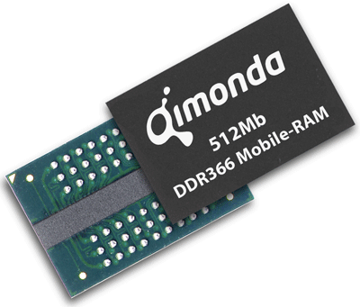

Random access memory (RAM) is part of the primary storage and initially empty. White (1998) said that needed data and tools for creating data (programs) are moved to RAM as a working environment. The work is all done here and products from this process are moved back to another storage sector to be stored, then RAM is erased.
RAM is etched with many parallel, thin and tiny address lines and data lines made of electrically conductive materials. Each addess line, at a right angle, is connected to a transistor that turns on or off a data line, which contains a capacitor that stores electricity, lying parallel to the address lines plane.
In terms of writing data, software (applications) and operating system send electric currents respectively through address lines and data lines. These currents turn on or shut down transistors when flowing through address lines then charge the capacitors when flowing through data lines whose transistors have been switched on. The whole procedure is repeated continuously to keep those capacitors fully charged. In binary language which computers can understand, charged capacitors are 1s and uncharged are 0s.
When reading data, electric currents are sent through address lines to turn the transistors on, creating a circuit connecting to the capacitors. Then, previously charged values flow back to the software through data lines, these are 1s. Positions that return no electric signals are 0s. Collected 1s and 0s from eight data lines form one byte.
Random access memory

Figure 5. Mobile phone RAM (Rtekno, 2014)